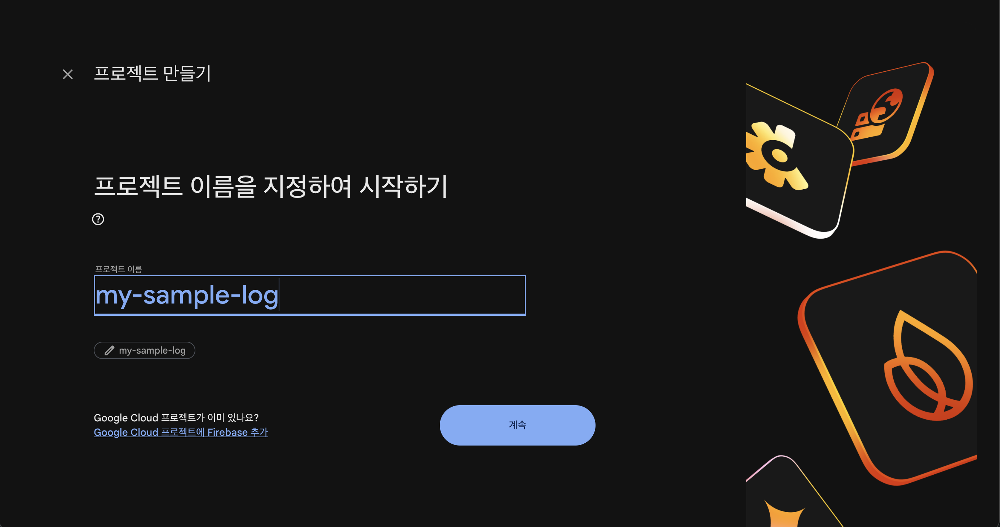
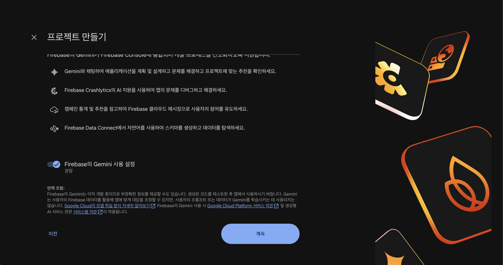
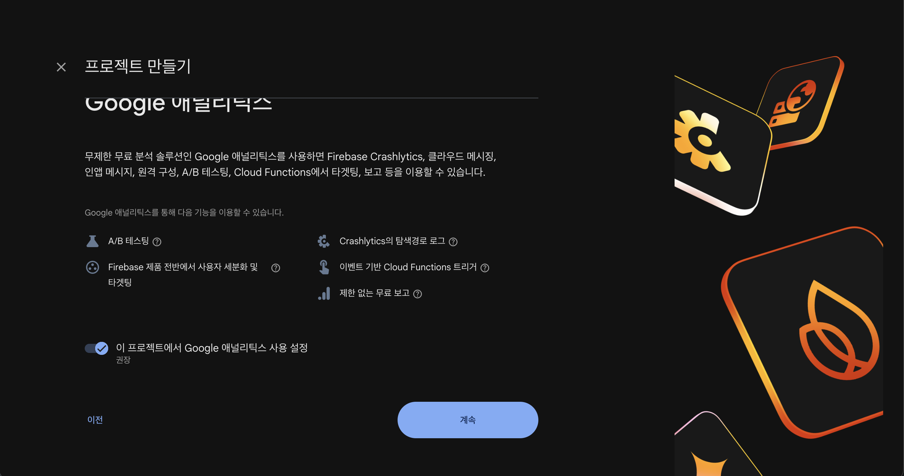
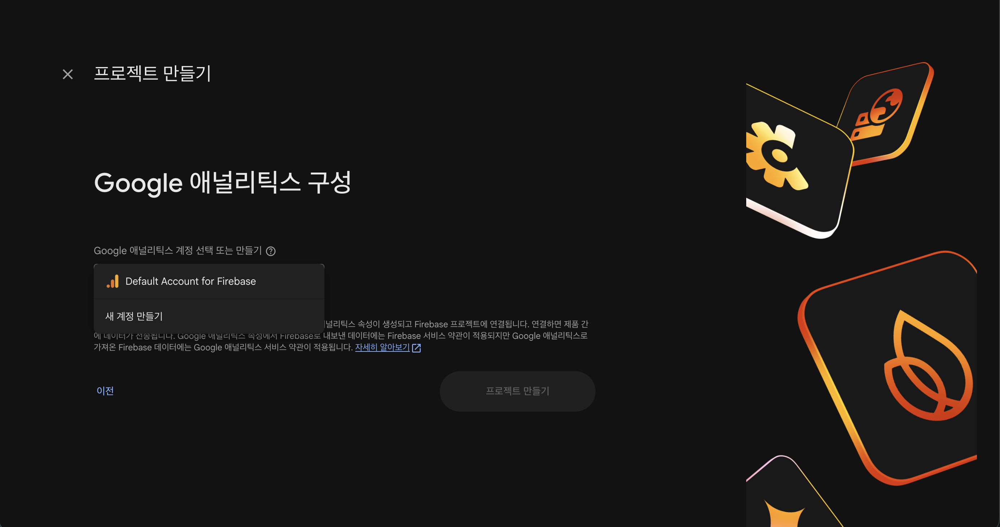
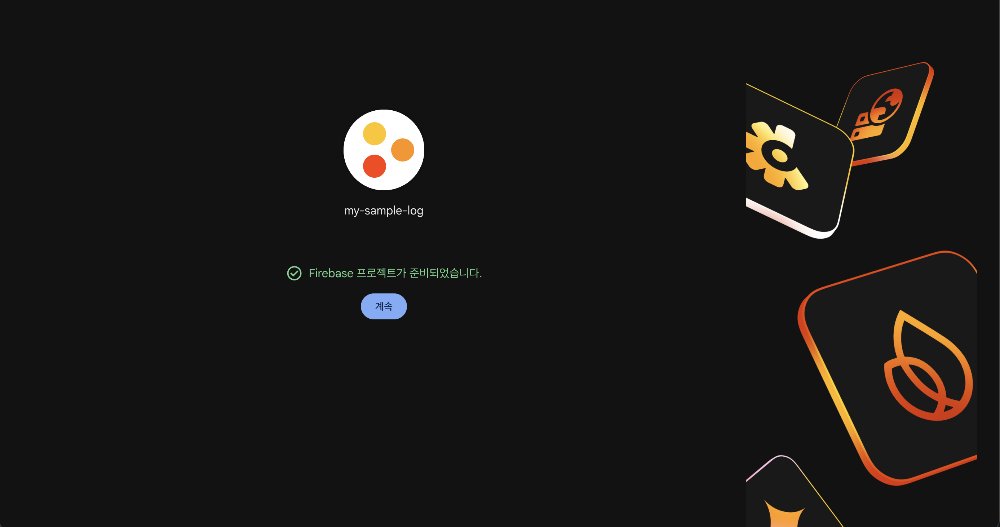
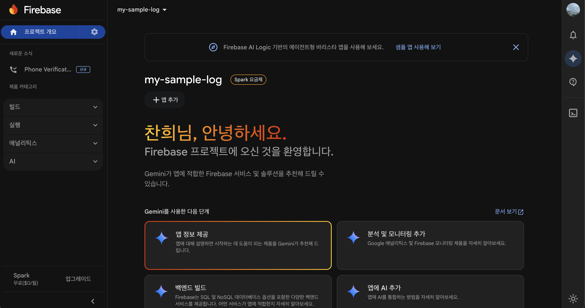
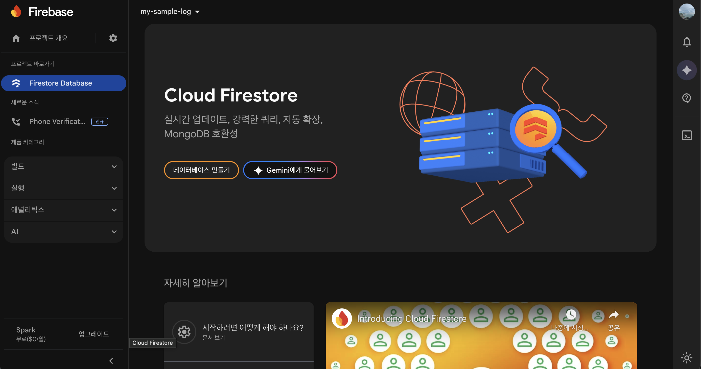
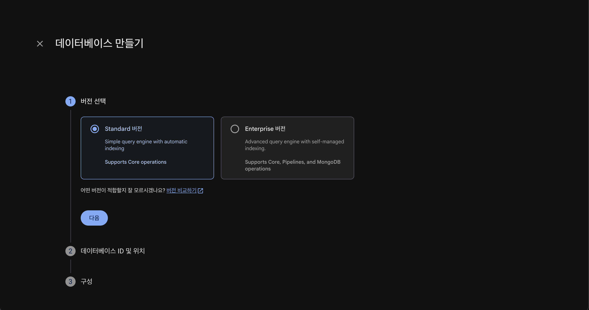
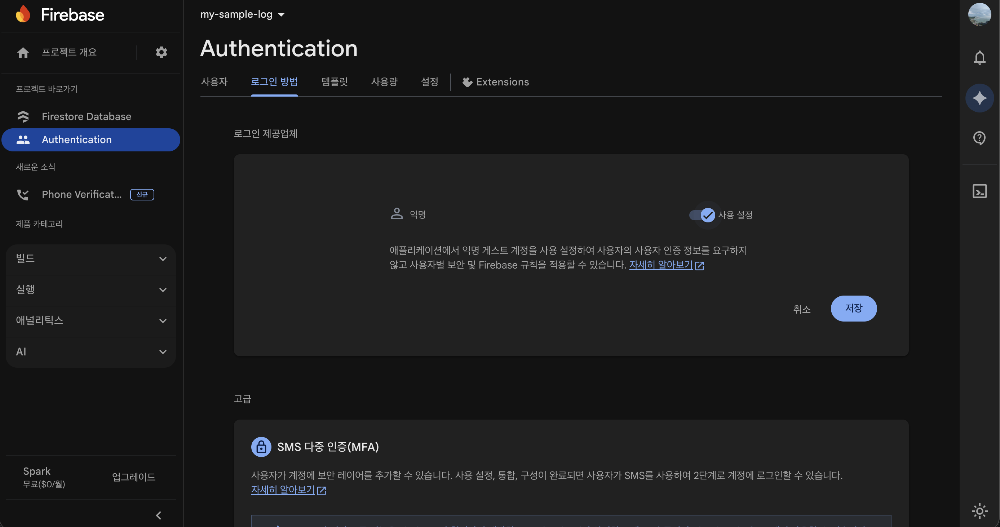
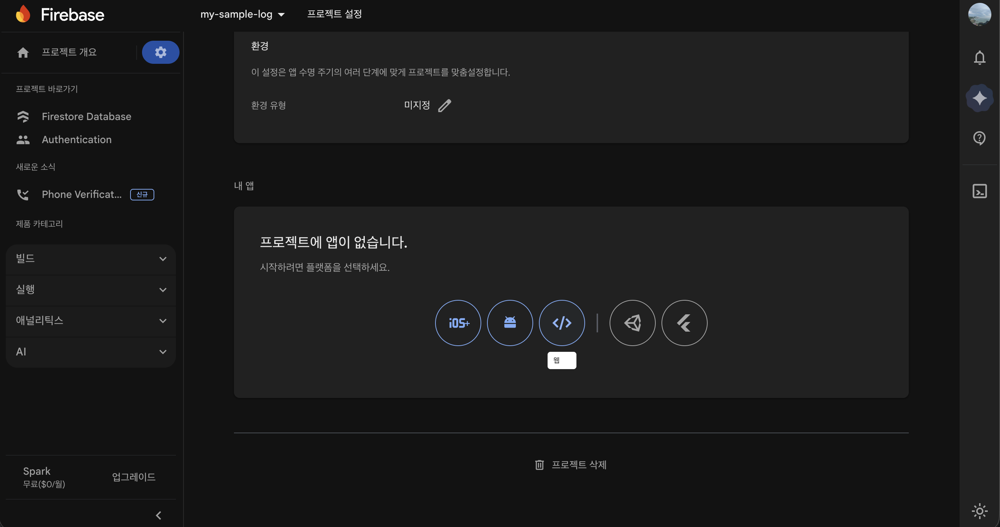

Firebase가 뭔가요?
Firebase는 Google에서 제공하는 무료 클라우드 저장소입니다.
시료 접수 데이터를 인터넷에 안전하게 저장할 수 있게 해줍니다.
- 여러 컴퓨터에서 같은 데이터를 볼 수 있음
- 자동 백업 효과
- 인터넷만 연결되면 언제 어디서나 접근 가능
1
시작하기 전에
필요한 것
- Google 계정 — 없으면 google.com에서 무료로 만들 수 있습니다
- 웹 브라우저 — Chrome 권장 (Edge, Firefox도 가능)
- 인터넷 연결 — 항상 연결되어 있어야 합니다
준비 사항
- Google 계정으로 로그인해 놓으세요
- 새 탭을 열어서 Firebase 콘솔에 접속할 준비를 하세요
💡 팁
이 가이드를 인쇄하거나 다른 창에 띄워놓으면서 따라하면 편합니다.
2
Firebase 프로젝트 만들기
Step 1: Firebase 콘솔 접속
- 웹 브라우저에서 아래 주소를 입력하세요
https://console.firebase.google.com
- Google 계정으로 로그인 — "계속" 버튼을 클릭하면 자동 로그인됩니다
Step 2: 새 프로젝트 만들기
- "프로젝트 추가" 버튼 클릭 (큰 파란 버튼)
- 프로젝트 이름 입력 (예: my-sample-log)
- 영문, 숫자, 하이픈(-)만 사용 가능
- 공백은 안 됩니다
- 나중에 변경할 수 없으므로 신중하게 입력하세요
- 체크박스 확인
- "Firebase 약관에 동의합니다" ✅ 체크
- "Google Analytics 약관" ✅ 체크 (선택사항)
- "프로젝트 만들기" 클릭

▲ 프로젝트 이름 입력 화면

▲ Gemini 사용 설정 - '계속' 클릭

▲ Google 애널리틱스 설정 - '계속' 클릭

▲ 애널리틱스 구성 - 'Default Account for Firebase' 선택 후 '프로젝트 만들기' 클릭
Step 3: 프로젝트 생성 대기
- 화면에 로딩 표시가 나옵니다
- 1~2분 정도 기다려주세요
- 완료되면 새로운 화면이 나타납니다

▲ 프로젝트가 준비되었습니다 - '계속' 클릭
✅ 확인
"프로젝트가 준비되었습니다" 메시지가 보이면 성공입니다!

▲ Firebase 프로젝트 대시보드 화면
3
Firestore 데이터베이스 만들기
Firestore는 데이터를 저장하는 구름 저장소(데이터베이스)입니다.
Step 1: Firestore 메뉴 찾기
- 왼쪽 메뉴에서 "빌드" 섹션 찾기
빌드
├─ Firestore Database ← 여기!
├─ Realtime Database
└─ Storage
- "Firestore Database" 클릭

▲ Firestore Database 메뉴 - '데이터베이스 만들기' 클릭
Step 2: 데이터베이스 만들기
- "데이터베이스 만들기" 버튼 클릭 (파란 버튼)
- [1단계] 버전 선택 → "Standard 버전" 선택 → "다음" 클릭
- [2단계] 데이터베이스 ID 및 위치 선택 (매우 중요!)
💡 추천: asia-northeast3 (Seoul) 한국에서 가장 빠른 응답 속도를 제공합니다.
- [3단계] 보안 규칙 구성 → "테스트 모드에서 시작" 선택
프로덕션 모드테스트 모드 ← 이것 선택!
- "만들기" 클릭

▲ 버전 선택 - 'Standard 버전' 선택 후 '다음' 클릭
⚠️ 중요 안내
- 테스트 모드는 30일 후 자동 만료됩니다
- 무료 개발용이고 보안이 낮습니다 (테스트용)
- 30일 후에는 7단계에서 보안 규칙을 업데이트해야 합니다
Step 3: 생성 대기
- 로딩 표시가 나옵니다
- 30초~1분 정도 기다려주세요
✅ 확인
빈 컬렉션 화면이 보이면 성공입니다!
4
익명 인증 활성화
사용자 로그인 없이도 데이터를 저장/읽을 수 있게 해줍니다.
Step 1: Authentication 메뉴
- 왼쪽 메뉴에서 "빌드" → "Authentication" 클릭
Step 2: 로그인 방법 추가
- "시작하기" 버튼 클릭
- 위쪽 "로그인 방법" 탭 클릭
[ 로그인 방법 ] [ 사용자 ] [ 설정 ]
↑ 여기 클릭
- 목록에서 "익명" 찾기
├─ 이메일/비밀번호
├─ 익명 ← 이것!
├─ Google
└─ ...
- "익명" 클릭
Step 3: 익명 인증 켜기
- 화면 오른쪽 위에 토글 버튼 찾기
- 토글을 오른쪽으로 드래그 (파란색으로 변함)
- 팝업이 나타나면 "사용 설정" 클릭

▲ 익명 인증 - 토글을 켜고 '저장' 클릭
✅ 확인
토글이 파란색 (On)으로 변하면 성공입니다!
5
앱 등록하고 설정값 가져오기
"시료 접수 대장" 앱이 Firebase를 사용할 수 있게 승인해주는 단계입니다.
Step 1: 프로젝트 설정 열기
- 왼쪽 위 톱니바퀴 아이콘(⚙️) 클릭 → "일반" (프로젝트 설정 페이지)
Step 2: 앱 등록
- 페이지를 아래로 스크롤
- "내 앱" 섹션 찾기
- 웹 아이콘 </> 클릭 (또는 "웹앱 추가")

▲ 프로젝트 설정 → '내 앱' 섹션에서 웹 아이콘(</>) 클릭
Step 3: 앱 닉네임 입력
- 팝업에서 앱 닉네임 입력 (예: 시료 접수 대장 앱)
- "앱 등록" 클릭
Step 4: Firebase SDK 설정값 복사
코드가 나타납니다. 아래와 비슷한 형태입니다:
const firebaseConfig = {
apiKey: "AIzaRy...",
authDomain: "my-sample-log.firebaseapp.com",
projectId: "my-sample-log",
storageBucket: "my-sample-log.appspot.com",
messagingSenderId: "123456789",
appId: "1:123456789:web:abcdef123456"
};
이 6개의 값을 모두 복사해서 메모장에 저장해놓으세요. 다음 단계에서 필요합니다.

▲ Firebase SDK 설정값 - 이 코드에서 값을 복사하세요
💡 팁
{ 다음부터 } 전까지 모두 선택해서 복사하세요.
6
firebase-auth.json 파일 만들기
Firebase 설정값을 앱이 읽을 수 있는 형태로 저장하는 파일입니다.
Electron 앱 사용자
웹 버전 사용자
Step 1: 텍스트 편집기 열기
Windows: 시작 메뉴에서 "메모장" 검색 → 메모장 열기
macOS: Spotlight(Cmd+Space) → "텍스트 편집기" 검색 → 열기
Step 2: 설정 내용 입력
아래 내용을 그대로 복사해서 붙여넣기하세요:
{
"apiKey": "여기에_apiKey_값",
"authDomain": "여기에_authDomain_값",
"projectId": "여기에_projectId_값",
"storageBucket": "여기에_storageBucket_값",
"messagingSenderId": "여기에_messagingSenderId_값",
"appId": "여기에_appId_값"
}
Step 3: 5단계에서 복사한 값으로 교체
각 "여기에_XXX_값" 부분을 5단계에서 복사한 값으로 바꾸세요.
예시:
{
"apiKey": "AIzaSyABCDEF123456-xyz",
"authDomain": "my-sample-log.firebaseapp.com",
"projectId": "my-sample-log",
"storageBucket": "my-sample-log.appspot.com",
"messagingSenderId": "123456789012",
"appId": "1:123456789012:web:abcdef123456ghi"
}
💡 팁
- 초록색 텍스트(값) 부분만 바꾸세요
{ } , : "기호는 절대 건드리면 안 됩니다!- 키 순서는 상관없습니다 (어떤 순서로 써도 동작합니다)
Step 4: "다른 이름으로 저장" (매우 중요!)
Windows:
- 메뉴: 파일 → "다른 이름으로 저장"
- 파일 이름: firebase-auth.json (정확히!)
- 파일 형식: "모든 파일 (*.*)" 선택
- 위치: 시료 접수 대장 앱 설치 폴더
- "저장" 클릭
⚠️ 파일 형식을 반드시 "모든 파일"로 변경!
"텍스트 문서(*.txt)"로 저장하면 파일명이 firebase-auth.json.txt가 되어 앱이 인식하지 못합니다.
macOS:
- 메뉴: 파일 → "다른 이름으로 저장"
- 파일 이름: firebase-auth.json
- 형식: 일반 텍스트
- 인코딩: UTF-8
- 저장 위치: 앱 설치 폴더
- "저장" 클릭
Step 5: 파일 확장자 확인
저장 후 파일 확장자를 반드시 확인하세요:
✅ 올바름: firebase-auth.json
❌ 틀림: firebase-auth.json.txt
❌ 틀림: firebase-auth.txt
❌ 틀림: firebase-auth.txt
⚠️ Windows 확장자 표시 설정
Windows 탐색기 → 보기 → "파일 확장자" 체크하면 실제 확장자를 확인할 수 있습니다.
웹 브라우저에서 앱을 사용하는 경우
파일을 만들 필요가 없습니다! 앱 안에서 직접 설정할 수 있습니다.
- 앱의 "설정 페이지" 열기
- "Firebase 수동 설정" 카드 찾기
- 5단계에서 복사한 6개 값을 직접 입력
- "저장" 클릭
7
테스트 모드 보안 규칙 (30일 후)
⚠️ 30일 후에 반드시 해야 하는 작업입니다
테스트 모드는 30일 후 자동 만료됩니다. 이후에는 보안 규칙을 업데이트해야 앱을 계속 사용할 수 있습니다.
Step 1: Firestore 규칙 페이지 열기
- Firebase 콘솔에서 "Firestore Database" 클릭
- 위쪽 "규칙" 탭 클릭
Step 2: 규칙 수정
현재 규칙을 모두 지우고 아래를 그대로 복사해서 붙여넣기하세요:
rules_version = '2';
service cloud.firestore {
match /databases/{database}/documents {
match /{document=**} {
allow read, write: if request.auth != null;
}
}
}
💡 이 규칙의 의미
로그인된 사용자만 데이터를 읽고 쓸 수 있습니다.
(시료 접수 대장 앱이 익명 로그인하므로 정상 작동합니다)
(시료 접수 대장 앱이 익명 로그인하므로 정상 작동합니다)

▲ Firestore 보안 규칙 - 위 코드를 붙여넣고 '게시' 클릭
Step 3: 규칙 게시
- 규칙 입력창 위의 "게시" 버튼 클릭
- 확인 팝업에서 "게시" 클릭
- 로딩이 끝나면 완료!
8
설정 확인하기
Step 1: 시료 접수 대장 앱 실행
앱을 실행하고 "설정 페이지"를 열어주세요.
Step 2: Firebase 연결 상태 확인
설정 페이지 → Firebase 섹션에서 확인:
✅ 연결됨
프로젝트: my-sample-log | 인증: 익명
위와 같이 보이면 성공입니다!
❌ "연결 안 됨" 표시되면?
- firebase-auth.json 파일이 올바르게 저장됐는지 확인
- Firebase 콘솔에서 프로젝트가 정상 상태인지 확인
- 인터넷 연결 확인
- 앱 재시작
Step 3: 간단한 데이터 저장 테스트
- 앱에서 시료 하나 등록 (테스트용)
- 데이터 저장
- 앱을 종료했다가 다시 열기
- 저장한 데이터가 그대로 남아있으면 성공!
✅ 완벽합니다!
Firebase가 정상 작동합니다. 이제 클라우드와 연동해서 사용할 수 있습니다.
!
보안 안내
테스트 모드의 한계
테스트 모드는 누구나 데이터를 읽고 쓸 수 있습니다. 따라서:
- ✅ 개인 컴퓨터에서만 사용 권장
- ❌ 공유 네트워크에서는 미권장
- ❌ 민감한 정보는 저장하지 마세요 (현재 테스트용)
?
자주 묻는 질문 (FAQ)
Q1: 파일을 어디에 저장해야 하나요?
▼
시료 접수 대장 앱이 설치된 폴더입니다:
- Windows:
C:\Users\[사용자명]\AppData\Local\Programs\시료접수대장\ - macOS:
Applications/시료접수대장.app/또는 앱이 있는 곳
Q2: firebase-auth.json 파일을 잘못 저장했어요.
▼
- 잘못 저장한 파일 삭제
- 6단계를 다시 따라하기
- 파일 확장자를
.json으로 꼭 확인
Q3: 30일 후에 꼭 보안 규칙을 변경해야 하나요?
▼
네, 반드시 변경해야 합니다.
- 변경하지 않으면 앱이 데이터를 저장할 수 없습니다.
- 30일 지났을 때 앱에서 알림이 나타납니다.
Q4: 여러 사람이 같은 데이터를 공유할 수 있나요?
▼
같은 Firebase 프로젝트를 사용하면 가능합니다. 동일한 firebase-auth.json 파일을 여러 컴퓨터에 넣으면 됩니다.
Q5: 데이터가 손실되지 않나요?
▼
Google 클라우드에 저장되므로 안전합니다. 하지만:
- 로컬 백업도 정기적으로 하세요
- 중요한 데이터는 Excel로도 내보내세요
Q6: 비용이 드나요?
▼
현재는 무료입니다!
- Google Firebase는 무료 사용량이 충분히 있습니다 (Spark Plan)
- 소규모 사용량에서는 추가 비용이 없습니다
!
문제 해결
증상 1: "Firebase에 연결할 수 없습니다"
- 인터넷 연결 확인
- firebase-auth.json 파일이 올바른 위치에 있는지 확인
- Firebase 콘솔에서 프로젝트 상태 확인
- 앱 재시작
증상 2: "데이터가 저장되지 않습니다"
- 30일 이상 지났으면 보안 규칙 업데이트 필요 (7단계)
- Firestore 할당량 확인 (보통 충분합니다)
- 권한 설정 다시 확인
증상 3: "firebase-auth.json을 찾을 수 없습니다"
- 파일명 정확히 확인: firebase-auth.json (대소문자 구분!)
- 파일 위치 확인 (앱 폴더와 동일 레벨)
- 파일 확장자 확인 (
.txt가 붙었으면 안 됨) - 숨김 파일 표시 설정 확인
✓
설정 완료 체크리스트
아래 항목을 클릭하여 완료를 표시하세요:
- Google 계정으로 로그인
- Firebase 프로젝트 생성 (2단계)
- Firestore 데이터베이스 생성 - 테스트 모드 (3단계)
- 익명 인증 활성화 (4단계)
- 앱 등록 및 설정값 복사 (5단계)
- firebase-auth.json 파일 생성 및 저장 (6단계)
- 앱에서 Firebase 연결 상태 "연결됨" 확인 (8단계)
- 테스트 데이터 저장/복원 확인 (8단계)
📅
30일 후 체크리스트
테스트 모드 만료 전에 준비하세요:
- 달력에 알림 설정 (30일 뒤)
- 보안 규칙 업데이트 방법 미리 읽기 (7단계)
- 중요한 데이터 백업 (메뉴 → 내보내기)
- Firebase 콘솔 북마크 저장